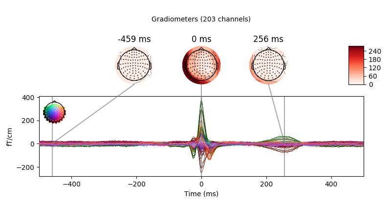
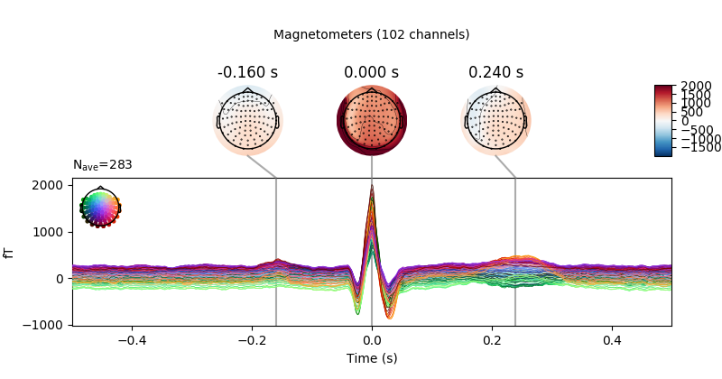
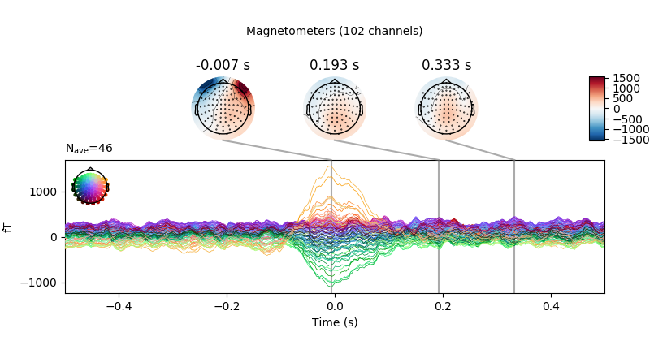
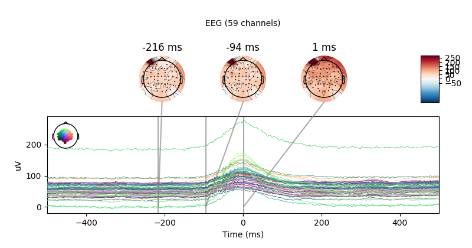

Note
Click here to download the full example code
Introduction to artifacts and artifact detection¶
Since MNE supports the data of many different acquisition systems, the particular artifacts in your data might behave very differently from the artifacts you can observe in our tutorials and examples.
Therefore you should be aware of the different approaches and of the variability of artifact rejection (automatic/manual) procedures described onwards. At the end consider always to visually inspect your data after artifact rejection or correction.
Background: what is an artifact?¶
Artifacts are signal interference that can be endogenous (biological) and exogenous (environmental). Typical biological artifacts are head movements, eye blinks or eye movements, heart beats. The most common environmental artifact is due to the power line, the so-called line noise.
How to handle artifacts?¶
MNE deals with artifacts by first identifying them, and subsequently removing them. Detection of artifacts can be done visually, or using automatic routines (or a combination of both). After you know what the artifacts are, you need remove them. This can be done by:
ignoring the piece of corrupted data
fixing the corrupted data
For the artifact detection the functions MNE provides depend on whether your data is continuous (Raw) or epoch-based (Epochs) and depending on whether your data is stored on disk or already in memory.
Detecting the artifacts without reading the complete data into memory allows you to work with datasets that are too large to fit in memory all at once. Detecting the artifacts in continuous data allows you to apply filters (e.g. a band-pass filter to zoom in on the muscle artifacts on the temporal channels) without having to worry about edge effects due to the filter (i.e. filter ringing). Having the data in memory after segmenting/epoching is however a very efficient way of browsing through the data which helps in visualizing. So to conclude, there is not a single most optimal manner to detect the artifacts: it just depends on the data properties and your own preferences.
In this tutorial we show how to detect artifacts visually and automatically. For how to correct artifacts by rejection see Rejecting bad data (channels and segments). To discover how to correct certain artifacts by filtering see Filtering and resampling data and to learn how to correct artifacts with subspace methods like SSP and ICA see Artifact Correction with SSP and Artifact Correction with ICA.
Artifacts Detection¶
This tutorial discusses a couple of major artifacts that most analyses have to deal with and demonstrates how to detect them.
import numpy as np
import mne
from mne.datasets import sample
from mne.preprocessing import create_ecg_epochs, create_eog_epochs
# getting some data ready
data_path = sample.data_path()
raw_fname = data_path + '/MEG/sample/sample_audvis_raw.fif'
raw = mne.io.read_raw_fif(raw_fname, preload=True)
Out:
Opening raw data file /home/circleci/mne_data/MNE-sample-data/MEG/sample/sample_audvis_raw.fif...
Read a total of 3 projection items:
PCA-v1 (1 x 102) idle
PCA-v2 (1 x 102) idle
PCA-v3 (1 x 102) idle
Range : 25800 ... 192599 = 42.956 ... 320.670 secs
Ready.
Current compensation grade : 0
Reading 0 ... 166799 = 0.000 ... 277.714 secs...
Low frequency drifts and line noise
(raw.copy().pick_types(meg='mag')
.del_proj(0)
.plot(duration=60, n_channels=100, remove_dc=False))
we see high amplitude undulations in low frequencies, spanning across tens of seconds
raw.plot_psd(tmax=np.inf, fmax=250)
Out:
Effective window size : 3.410 (s)
Effective window size : 3.410 (s)
Effective window size : 3.410 (s)
On MEG sensors we see narrow frequency peaks at 60, 120, 180, 240 Hz, related to line noise. But also some high amplitude signals between 25 and 32 Hz, hinting at other biological artifacts such as ECG. These can be most easily detected in the time domain using MNE helper functions
ECG¶
finds ECG events, creates epochs, averages and plots
average_ecg = create_ecg_epochs(raw).average()
print('We found %i ECG events' % average_ecg.nave)
joint_kwargs = dict(ts_args=dict(time_unit='s'),
topomap_args=dict(time_unit='s'))
average_ecg.plot_joint(**joint_kwargs)

- 
- 
Out:
Reconstructing ECG signal from Magnetometers
Setting up band-pass filter from 8 - 16 Hz
Filter length of 8192 samples (13.639 sec) selected
Filter length of 8192 samples (13.639 sec) selected
Number of ECG events detected : 283 (average pulse 61 / min.)
283 matching events found
No baseline correction applied
Not setting metadata
Created an SSP operator (subspace dimension = 3)
Loading data for 283 events and 601 original time points ...
0 bad epochs dropped
We found 283 ECG events
we can see typical time courses and non dipolar topographies not the order of magnitude of the average artifact related signal and compare this to what you observe for brain signals
EOG¶
average_eog = create_eog_epochs(raw).average()
print('We found %i EOG events' % average_eog.nave)
average_eog.plot_joint(**joint_kwargs)

- 
- 
Out:
EOG channel index for this subject is: [375]
Filtering the data to remove DC offset to help distinguish blinks from saccades
Setting up band-pass filter from 2 - 45 Hz
Filter length of 8192 samples (13.639 sec) selected
Setting up band-pass filter from 1 - 10 Hz
Filter length of 8192 samples (13.639 sec) selected
Now detecting blinks and generating corresponding events
Number of EOG events detected : 46
46 matching events found
No baseline correction applied
Not setting metadata
Created an SSP operator (subspace dimension = 3)
Loading data for 46 events and 601 original time points ...
0 bad epochs dropped
We found 46 EOG events
Knowing these artifact patterns is of paramount importance when judging about the quality of artifact removal techniques such as SSP or ICA. As a rule of thumb you need artifact amplitudes orders of magnitude higher than your signal of interest and you need a few of such events in order to find decompositions that allow you to estimate and remove patterns related to artifacts.
- Consider the following tutorials for correcting this class of artifacts:
Total running time of the script: ( 0 minutes 17.387 seconds)
Estimated memory usage: 1593 MB